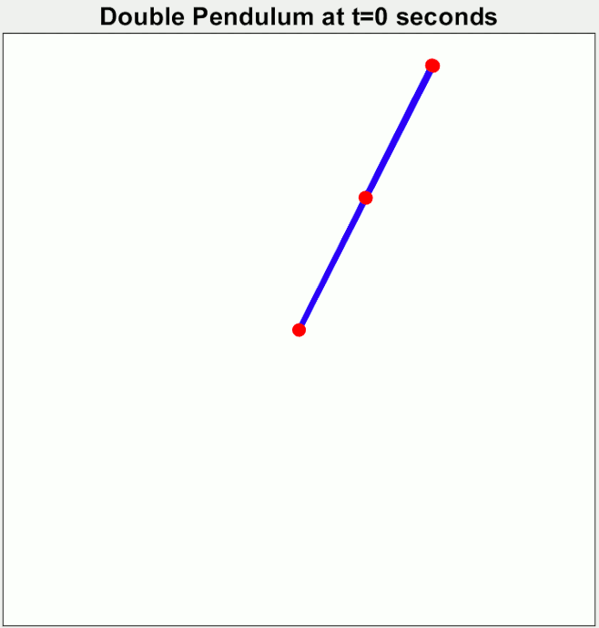

Complex dynamical systems are all around us - in biology, physics, financial markets, and more. Even simple physical systems, such as two coupled pendulums, can exhibit surprisingly rich and nonlinear behavior. In many cases, the underlying equations governing these systems are difficult or impossible to derive analytically. As a result, modern research increasingly relies on data-driven approaches to model and predict their dynamics. My freshman summer, I worked in Professor Kwabena Boahen’s Brains in Silicon Lab studying sample efficiency and generalization in data-driven dynamical system identification, contributing to benchmarking efforts on a platform called DynaDojo.

Modeling Chaos: Advancing Benchmarking for Data-Driven Dynamical System Identification (PDF)